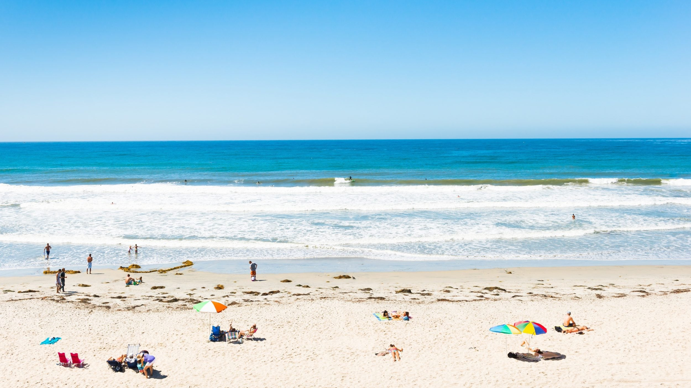
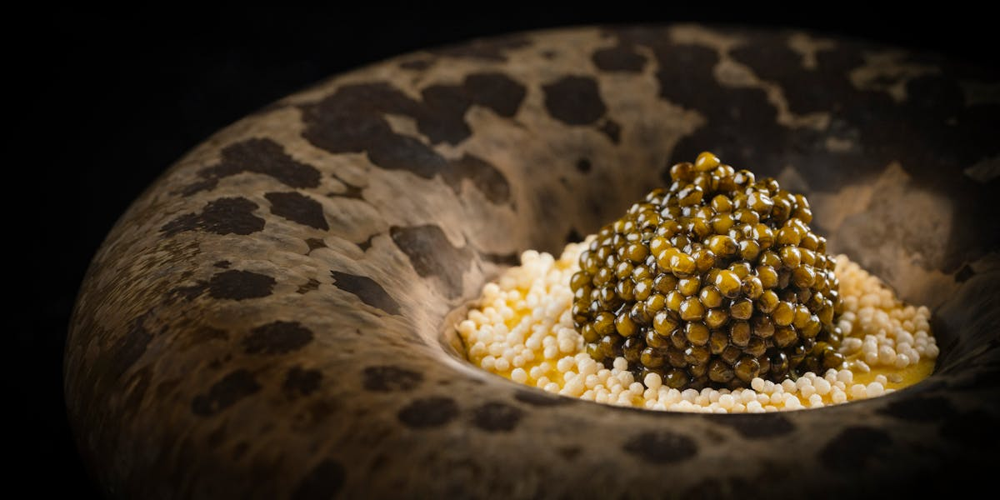
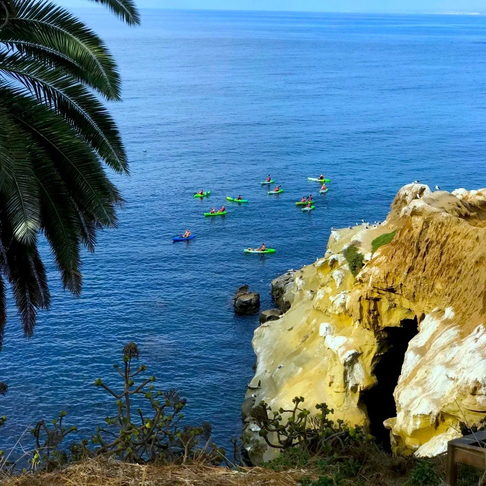
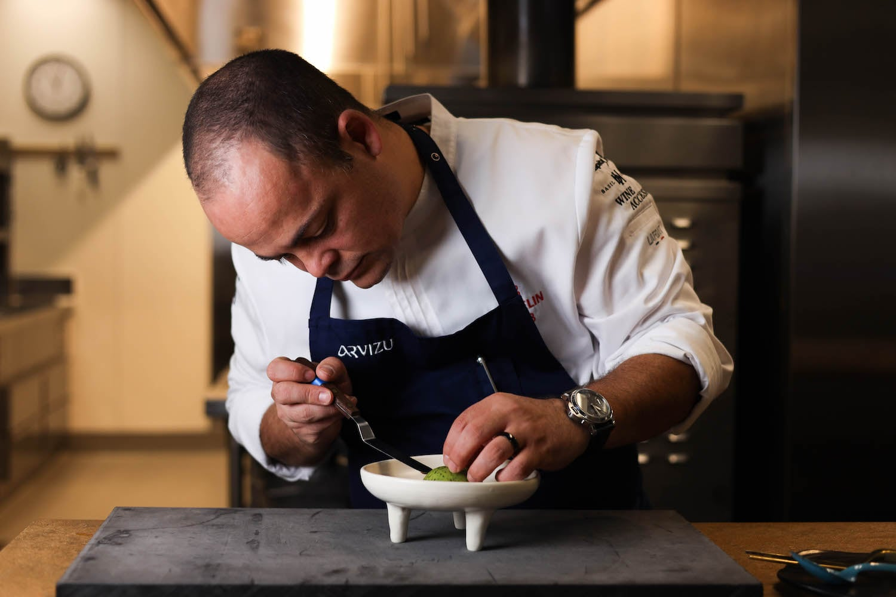

at Addison
10-course menu
fallbacks
admission
The Anchor: Addison

Addison
★★★ — Southern California's Only 3-StarJust renovated: Addison closed April 1, 2026 for a 7-week refresh and reopened May 19 with a new Champagne Lounge and modernised dining room, preserving the Spanish Colonial Revival bones.[5]
Four One-Star Alternatives
San Diego has no 2-star tier — the field goes directly from 1-star to Addison's 3.[1] These four are the complete field. All sit 40–55 km north of downtown, so a 1-star dinner is a standalone excursion, not a day-trip pairing.
The Coastal Corridor — North to South
Two Days, Two Modes
Coast & Outdoors

Culture & City
Valle — the Best 1-Star Alternative

Valle ★
Chef Roberto Alcocer brings 25+ years across Baja, France, and Spain to a contemporary Mexican tasting menu anchored in local produce and Baja California wines.[8] The oceanfront setting — with views of the Oceanside Pier — gives Valle a sense of place that most tasting-menu rooms lack.
The seasonal Tierra y Mar menu is $220++ per person; a concise tasting is available at $140++.[7] Paired with a drive up the PCH, it's a strong standalone excursion rather than a compromise.
The Season Window
- Warm 70s, ocean swimmable
- Thinner crowds
- No marine-layer mornings
- "May Gray / June Gloom"
- Marine layer most mornings
- Overcast beach days
- Hot, dry, crowded
- Comic-Con locks downtown hotels
- Book well in advance
If combining with a tech conference: mid-September (Sep 14–17) overlaps VSLive, Gartner Procurement, and DDX in the same week.[24]